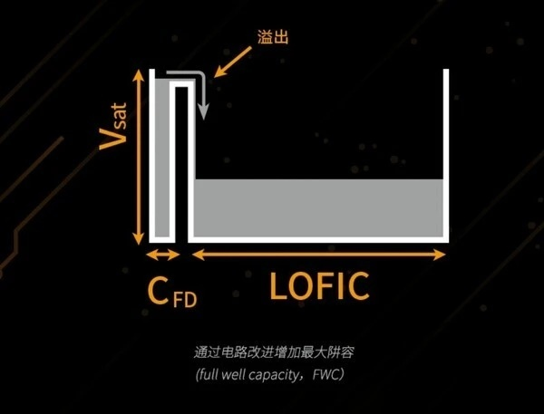
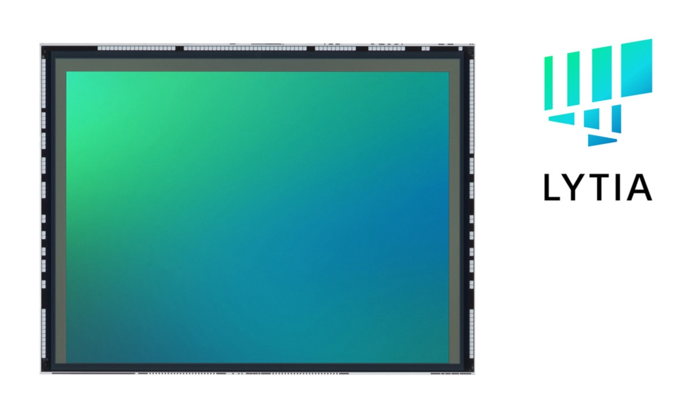
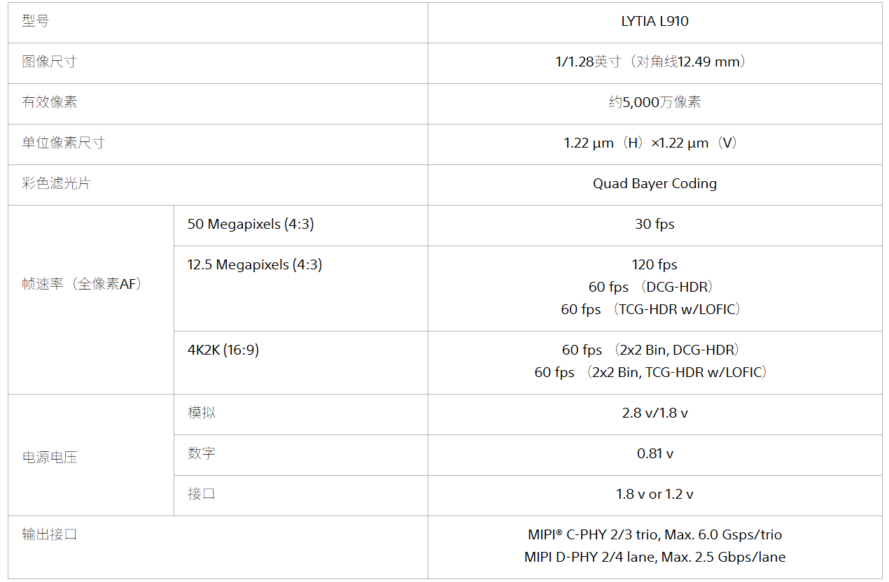
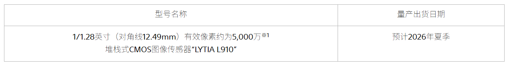

신제품 발표
Sony Semiconductor Shanghai가 차세대 이미지 센서 LYTIA L910을 발표했습니다. 이는 LYTIA 시리즈 중 처음으로 LOFIC 기술이 적용된 센서로, 저전력 환경에서도 100dB의 높은 다이내믹 레인지를 구현할 수 있는 것이 특징입니다.
LOFIC 기술 설명
LOFIC(lateral overflow integration capacitors)은 차세대 HDR 촬영 기술로, 단일 픽셀 내에 선형 및 로그 방식의 두 가지 전하 수용 방식을 통합하여 CMOS 센서의 다이내믹 레인지를 향상시킵니다. 이를 통해 스마트폰이 명암비가 큰 장면에서도 더욱 풍부한 디테일을 담은 사진을 제공할 수 있습니다.
주요 사양
- 해상도: 50MP
- 픽셀 크기: 1.22μm
- 센서 크기: 1/1.28인치
핵심 기능 및 장점
- 포화 전하량(Full Well) 확대: 전하 수용 능력을 높여 하이라이트 영역의 전환을 더욱 자연스럽게 표현합니다.
- 넓은 다이내믹 레인지: 하이라이트 과노출과 암부 노출 부족을 줄이며, 강한 조명 아래에서도 뛰어난 촬영 성능을 제공합니다.
- 낮은 읽기 노이즈: 저조도 환경에서 세밀한 디테일을 표현하며, 화면을 더욱 깨끗하고 노이즈가 적게 구현합니다.
- 저전력 성능: 4K 60fps HDR 비디오를 지속적으로 촬영할 수 있으며, 안정적이고 매끄러운 구동과 긴 지속성을 보장합니다.
기술적 특징 및 상세 사양
Sony의 공식 설명에 따르면, LYTIA L910은 광전 다이오드의 과잉 전하를 축적할 수 있는 LOFIC 구조를 채택하여 기존 제품 대비 포화 전하량(Full Well)을 더욱 확대했습니다. 동시에 'Triple Conversion Gain-HDR(TCG-HDR)' 기술을 적용하여, 단 한 번의 노출로 얻은 전하를 세 가지 다른 변환 효율로 읽어냄으로써 밝은 영역의 과노출 현상과 암부 및 중간 톤 영역의 노이즈를 효과적으로 억제하고 고화질 이미지를 구현합니다.
또한, 전하를 전압으로 변환하는 효율을 높이는 UHCG(Ultra High Conversion Gain) 회로 기술을 통해 무작위 노이즈 발생률을 기존 제품 대비 약 30% 낮추었으며, 이를 통해 저조도 환경에서의 화질을 크게 개선했습니다.
촬영 성능 및 기대 효과
LYTIA L910은 단 한 번의 노출로 100dB의 다이내믹 레인지를 실현할 수 있어, 저조도 환경에서 노이즈로 인한 입자감을 억제할 뿐만 아니라 명암 대비가 큰 환경에서도 부드러운 계층 표현을 가능하게 합니다. 또한 멀티 노출 과정이 필요 없으므로 동적인 물체의 블러 현상을 방지하며, 노출 시간을 늘려 촬영 신호의 신호 대 잡음비(SNR)를 높이고 조명 플리커(Flicker) 현상을 억제합니다.
양산 및 출시 일정
Sony Semiconductor 공식 홈페이지에 따르면, LYTIA L910은 2026년 여름부터 양산 및 출하가 시작될 예정입니다.
총평
LYTIA L910은 LOFIC과 TCG-HDR 기술을 결합하여 단일 노출만으로도 압도적인 다이내믹 레인지를 구현하는 차세대 센서입니다. 특히 저전력 환경에서의 고성능 HDR 비디오 촬영과 정교한 노이즈 제어 능력을 갖춰, 플래그십 스마트폰 카메라의 성능을 한 단계 끌어올릴 것으로 기대됩니다.




